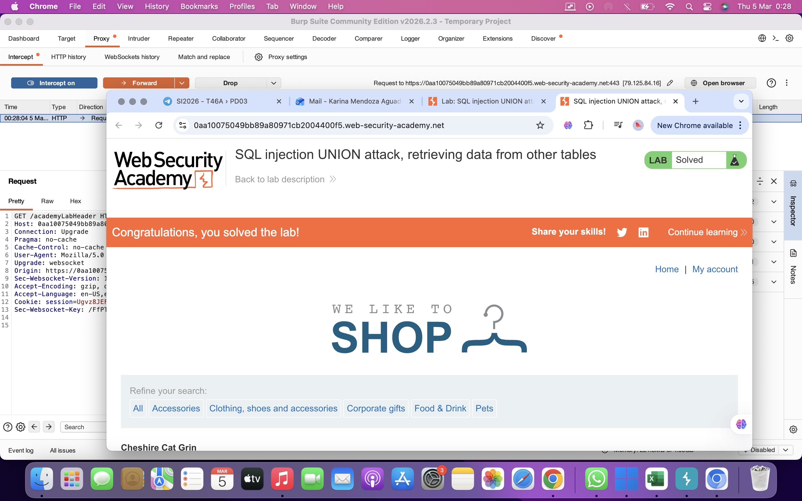

SQL injection UNION attack, retrieving data from other tables
El objetivo de este laboratorio es explotar una vulnerabilidad de SQL Injection utilizando un ataque UNION SELECT para recuperar información almacenada en otras tablas de la base de datos.
En este caso, la base de datos contiene una tabla llamada users que almacena nombres de usuario y contraseñas.
El objetivo final es recuperar estas credenciales y utilizarlas para iniciar sesión como el usuario administrator.
La vulnerabilidad se encuentra en el filtro de categorías de productos de la aplicación web.
Cuando el usuario selecciona una categoría, el servidor ejecuta una consulta SQL similar a la siguiente:
Debido a que la entrada del usuario no está correctamente validada, es posible manipular la consulta mediante SQL Injection.
El ataque se realiza utilizando UNION SELECT, lo que permite combinar la consulta original con otra consulta que recupere información de otras tablas.
Determinar número de columnas y columnas de texto:
Recuperar datos de la tabla users:
Primero se interceptó la solicitud utilizando Burp Suite para modificar el parámetro category.
Después se utilizó una inyección UNION SELECT para confirmar que la consulta devuelve dos columnas y que ambas aceptan datos de tipo texto.
Posteriormente se modificó el payload para consultar directamente la tabla users de la base de datos.
Esto permitió recuperar los nombres de usuario y contraseñas almacenados en dicha tabla.
La respuesta de la aplicación mostró los nombres de usuario y contraseñas almacenados en la base de datos.
Con esta información fue posible obtener la contraseña del usuario administrator y utilizarla para iniciar sesión en la aplicación.
Después de iniciar sesión correctamente, el laboratorio quedó resuelto.
